El sistema de climatización de un edificio de oficinas en Córdoba está formado por tres subsistemas conectados según el siguiente esquema de bloques. El bloque G₁ representa el controlador de temperatura (ganancia G₁), el bloque G₂ el actuador térmico y el bloque G₃ el sistema auxiliar de ventilación que activa en paralelo con G₂.
La señal de referencia R pasa primero por G₁ en serie y luego por G₂ y G₃ en paralelo (sus salidas se suman) para producir la salida C.
a) Obtener la función de transferencia equivalente C/R.
b) Si G₁ = 2, G₂ = 3 y G₃ = 5, calcular el valor numérico de C/R y la salida C cuando R = 4.
c) Explicar qué ventaja ofrece el sistema en lazo cerrado frente al lazo abierto anterior.
📝 Ver resolución completa
Apartado a — Función de transferencia (serie + paralelo)
Paso 1 — Bloque G₂ y G₃ en paralelo: sus salidas se suman sobre la misma entrada:
\[G_{paralelo}\ = \ G_2\ + \ G_3\]
Paso 2 — G₁ en serie con el bloque equivalente (cascada = producto):
\[C/R\ = \ G_1\ \cdot \ (G_2\ + \ G_3)\]
Apartado b — Valor numérico
\[C/R\ = \ 2\ \cdot \ (3\ + \ 5)\ = \ 2\ \cdot \ 8\ = \ 16\ \ \ \ \ C\ = \ 16\ \cdot \ R\ = \ 16\ \cdot \ 4\ = \ 64\]
Apartado c — Ventaja del lazo cerrado
Este sistema es de lazo abierto: la salida C no influye en la entrada. Si un perturbación (p. ej. calor exterior) altera la temperatura real, el sistema no lo detecta ni corrige. En lazo cerrado el sensor mide la salida real, el comparador detecta el error (R−C) y el controlador lo corrige automáticamente ⇒ mayor precisión y robustez frente a perturbaciones.
Un amplificador electrónico de Sevilla tiene una ganancia en trayectoria directa G y está realimentado positivamente con una red de ganancia H (la señal de realimentación se suma a la entrada en lugar de restarse).
a) Deducir la función de transferencia C/R del sistema con realimentación positiva.
b) Si G = 5 y H = 0,3, calcular C/R. Comparar con la realimentación negativa con los mismos valores.
c) Determinar el valor de H para el cual el sistema se vuelve inestable (C/R → ∞) cuando G = 5. Explicar el significado físico de esta condición.
📝 Ver resolución completa
Apartado a — Deducción de C/R con realimentación positiva
Comparador suma (realimentación positiva): E = R + H·C
Trayectoria directa: C = G·E = G·(R + H·C) = G·R + G·H·C
Despejando C: C − G·H·C = G·R ⇒ C·(1 − G·H) = G·R
\[C/R\ = \ G\ /\ (1\ - \ G \cdot H)\ \ \ \ (realimentación\ positiva)\]
Comparar con realimentación negativa: C/R = G/(1+G·H). Solo cambia el signo en el denominador.
Apartado b — Cálculo numérico y comparación
\[C/R_{positiva}\ = \ 5/(1 - 5 \times 0,3)\ = \ 5/(1 - 1,5)\ = \ 5/( - 0,5)\ = \ - 10\]
\[C/R_{negativa}\ = \ 5/(1 + 5 \times 0,3)\ = \ 5/(1 + 1,5)\ = \ 5/2,5\ = \ 2\]
La realimentación negativa reduce la ganancia (2 < 5) y estabiliza. La positiva la amplifica y puede invertir su signo o llevarla a inestabilidad.
Apartado c — Condición de inestabilidad
\[C/R\ \rightarrow \ \infty\ \ cuando\ \ 1\ - \ G \cdot H\ = \ 0\ \ \Rightarrow \ \ G \cdot H\ = \ 1\ \ \Rightarrow \ \ H\ = \ 1/G\ = \ 1/5\ = \ 0,2\]
Significado físico: si H ≥ 0,2 la señal realimentada es tan grande como la entrada original. El sistema se autoexcita — la salida crece indefinidamente sin señal de entrada. En la práctica se satura o destruye el componente.
Un sistema de control de presión en una planta de Málaga tiene la siguiente estructura: la señal de error E pasa por dos vías en paralelo (G₁ y G₂) cuyas salidas se suman antes de llegar al proceso G₃. El bloque de realimentación es H.
Esquema: R → comparador (−) → E → [G₁ ∥ G₂] → G₃ → C ; realimentación negativa H desde C.
a) Simplificar el bloque paralelo y obtener la función de transferencia C/R del sistema completo.
b) Si G₁ = 2, G₂ = 3, G₃ = 4 y H = 0,1, calcular C/R y el error en régimen permanente para una entrada escalona unitaria R = 1.
📝 Ver resolución completa
Apartado a — Simplificación y función de transferencia
Paso 1 — Paralelo G₁ y G₂: Gparalelo = G₁ + G₂
Paso 2 — Gparalelo en serie con G₃: Gdirecta = (G₁+G₂)·G₃
Paso 3 — Lazo cerrado con realimentación negativa H:
\[C/R\ = \ (G_1 + G_2) \cdot G_3\ /\ \lbrack 1\ + \ (G_1 + G_2) \cdot G_3 \cdot H\rbrack\]
Apartado b — Cálculo numérico y error
\[G_{directa}\ = \ (2 + 3) \cdot 4\ = \ 5 \cdot 4\ = \ 20\]
\[C/R\ = \ 20\ /\ (1\ + \ 20 \cdot 0,1)\ = \ 20\ /\ (1\ + \ 2)\ = \ 20/3\ \approx \ 6,667\]
\[C\ = \ (20/3) \cdot 1\ = \ 6,667\ \ \ \ e\ = \ R\ - \ H \cdot C\ = \ 1\ - \ 0,1 \cdot 6,667\ = \ 1\ - \ 0,667\ = \ 0,333\]
Verificación: E = R − H·C = 1 − 0,1·(20/3) = 1 − 2/3 = 1/3 ≈ 0,333 ✓
El diagrama de bloques de la figura corresponde al sistema de control de presión de un cilindro hidráulico industrial. El transductor G₁ convierte la presión de consigna p* en una tensión v₁. El comparador resta v₁ y la tensión v₂ del sensor de presión, obteniendo el error v₃ que amplifica G₂ y aplica a la válvula G₃, que regula la presión p del cilindro. Datos: G₂ = 10 V/V · G₃ = 25·10⁵ Pa/V · H = 0,1·10⁻⁵ V/Pa.
a) Obtener la relación p/p*.
b) Si en régimen permanente G2 = 10 V/V, G3 = 25·10⁵ Pa/V y H = 0,1·10⁻⁵ V/Pa, obtener G1 para que la presión del cilindro p sea igual a la de consigna p*.
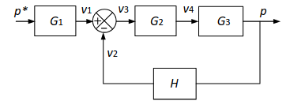
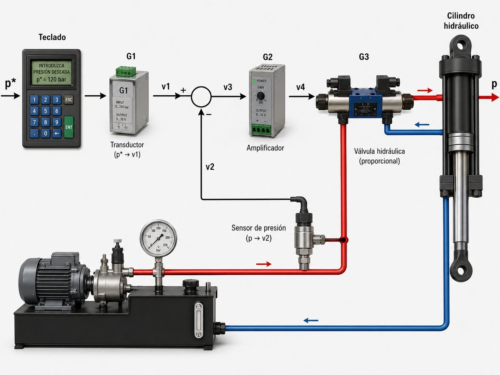
📝 Ver resolución completa
Conceptos previos — Cómo leer el diagrama
El diagrama tiene: (1) un bloque G1 ANTES del comparador (fuera del lazo), (2) un lazo cerrado negativo con trayectoria directa G2·G3 y realimentación H.
Regla clave: un bloque fuera del lazo (en cascada con la entrada) solo multiplica al numerador — NO entra en el denominador.
Apartado a — Función de transferencia p/p*
Identificar la trayectoria directa del lazo: G2 y G3 están en serie → Glazo = G2·G3.
Aplicar la fórmula del lazo cerrado negativo al lazo interior:
\[FT\_ lazo\ = \ \frac{G2 \cdot G3}{1 + G2 \cdot G3 \cdot H}\]
G1 está en serie con la entrada, fuera del lazo → multiplica al numerador:
\[\frac{p}{p*} = \ G1 \cdot \frac{G2 \cdot G3}{1 + G2 \cdot G3 \cdot H} = \ \frac{G1 \cdot G2 \cdot G3}{1 + G2 \cdot G3 \cdot H}\]
Apartado b — Calcular G1 para que p = p*
Calcular el producto G2·G3·H (adimensional, verificar unidades):
\[G2 \cdot G3 \cdot H\ = \ 10\ \lbrack V/V\rbrack\ \times \ 25 \cdot 10^5\ \lbrack Pa/V\rbrack\ \times \ 0,1 \cdot 10^{-5}\ \lbrack V/Pa\rbrack\ = \ 10 \times 25 \times 0,1\ = \ 25\]
Para que p = p*, la FT debe ser igual a 1:
\[\frac{G1 \cdot G2 \cdot G3}{1 + G2 \cdot G3 \cdot H} = \ 1\ \ \ \ \rightarrow \ \ \ \ G1 \cdot G2 \cdot G3\ = \ 1 + G2 \cdot G3 \cdot H\]
Despejar G1:
\[G1\ = \ \frac{1 + G2 \cdot G3 \cdot H}{G2 \cdot G3} = \ \frac{1 + 25}{10 \times 25 \cdot 10^5} = \ \frac{26}{2,5 \cdot 10^7} = \ 1,04 \cdot 10^{-6}\ V/Pa\]
⚠ G1 está FUERA del lazo → solo va al numerador. Error frecuente: meterlo en el denominador.
⚠ Verificar unidades: G2[V/V]·G3[Pa/V]·H[V/Pa] = adimensional. El denominador debe ser adimensional.
⚠ G2·G3·H = 10×25×0,1 = 25, NO 2,5. Los exponentes 10⁵ y 10⁻⁵ se cancelan.
Un horno industrial de una fábrica cerámica de Bailén (Jaén) dispone de un sistema de control de temperatura en lazo cerrado con realimentación unitaria (H = 1). El regulador tiene ganancia G₁ = 20 y la planta (horno) tiene ganancia G₂ = 0,5. La temperatura de consigna es T* = 800 °C.
a) Obtén la función de transferencia T/T* del sistema y calcula la temperatura real T en régimen permanente.
b) Calcula el error en régimen permanente e = T* − T. ¿Qué ganancia G₁ sería necesaria para que el error sea inferior a 5 °C?
📝 Ver resolución completa
Apartado a — Función de transferencia y temperatura real
Lazo cerrado negativo con H = 1 (realimentación unitaria). Trayectoria directa: G₁·G₂ = 20×0,5 = 10.
\[T/T*\ = \ G_1 \cdot G_2\ /\ (1\ + \ G_1 \cdot G_2 \cdot H)\ = \ 10\ /\ (1\ + \ 10 \times 1)\ = \ 10/11\ \approx \ 0,909\]
\[T\ = \ (T/T*) \cdot T*\ = \ 0,909\ \times \ 800\ = \ 727,3\ {^\circ}C\]
Apartado b — Error y G₁ necesaria
Error en régimen permanente (H = 1): e = T* − T = 800 − 727,3 = 72,7 °C. Con realimentación unitaria: e = T*/(1 + G₁·G₂) = 800/11 ≈ 72,7 °C.
Para que e < 5 °C con T* = 800: e = 800/(1 + G₁·G₂) < 5 → 1 + G₁·0,5 > 160 → G₁ > 318.
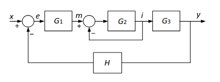
Un sistema de control de velocidad de un motor eléctrico industrial utiliza una estructura de dos lazos de realimentación. G₁ es el regulador, G₂ es la planta (motor), H₂ es el sensor del lazo interno y H₁ es el tacogenerador del lazo externo. Datos: G₁ = 5, G₂ = 8, H₁ = 0,1, H₂ = 0,2.
a) Obtén la función de transferencia ω/ω* simplificando paso a paso los dos lazos.
b) Calcula el valor numérico de ω/ω* con los datos dados.
📝 Ver resolución completa
Apartado a — Reducción paso a paso (de dentro hacia fuera)
Paso 1 — Lazo interno (G₂ con H₂):
\(G_{\text{int}} = \dfrac{G_2}{1 + G_2 \cdot H_2}\)
Paso 2 — G₁ en serie con Gint → trayectoria directa del lazo externo:
\(G_{\text{dir}} = \dfrac{G_1 \cdot G_2}{1 + G_2 \cdot H_2}\)
Paso 3 — Lazo externo (Gdir con H₁):
\(\dfrac{\omega}{\omega^*} = \dfrac{G_{\text{dir}}}{1 + G_{\text{dir}} \cdot H_1} = \dfrac{G_1 \cdot G_2 / (1 + G_2 \cdot H_2)}{1 + G_1 \cdot G_2 \cdot H_1 / (1 + G_2 \cdot H_2)}\)
Paso 4 — Multiplicar por (1+G₂·H₂):
\(\dfrac{\omega}{\omega^*} = \dfrac{G_1 \cdot G_2}{1 + G_2 \cdot H_2 + G_1 \cdot G_2 \cdot H_1}\)
Apartado b — Valor numérico
\(1 + G_2 \cdot H_2 + G_1 \cdot G_2 \cdot H_1 = 1 + 8 \times 0{,}2 + 5 \times 8 \times 0{,}1 = 1 + 1{,}6 + 4{,}0 = 6{,}6\)
\(\dfrac{\omega}{\omega^*} = \dfrac{5 \times 8}{6{,}6} = \dfrac{40}{6{,}6} \approx 6{,}06\)
Apartado c — Efecto de duplicar G₁
Si G₁ pasa de 5 a 10 (se duplica), calcula el nuevo valor de ω/ω* y razona qué ocurre con el error de seguimiento.
\[\omega/\omega*\ = \ 10 \times 8\ /\ (1\ + \ 8 \times 0,2\ + \ 10 \times 8 \times 0,1)\ = \ 80\ /\ (1\ + \ 1,6\ + \ 8)\ = \ 80/10,6\ \approx \ 7,55\]
El sistema de control de temperatura de un horno industrial tiene una ganancia directa G = 10 y un sensor de realimentación H = 0,2 (realimentación no unitaria). Se aplica una consigna de temperatura R = 3 (en unidades normalizadas).
a) Obtén la función de transferencia C/R y calcula la temperatura de salida C en régimen permanente.
b) Calcula la ganancia G necesaria para que el error sea inferior a 0,1 cuando R = 1.
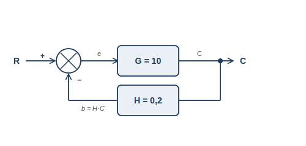
📝 Ver resolución completa
Apartado a — C/R y salida en régimen permanente
\[C/R\ = \ \frac{G}{1 + G \cdot H} = \ \frac{10}{1 + 10 \times 0,2} = \ \frac{10}{3} = \ 3,33\]
\[C\ = \ \frac{C}{R} \cdot R\ = \ 3,33 \times 3\ = \ 10,0\]
Apartado b — Señal realimentada y error (definición Ponencia)
La Ponencia define el error como e = R − b, donde b = H·C es la señal que llega al comparador:
\[b\ = \ H \cdot C\ = \ 0,2 \times 10,0\ = \ 2,0\]
\[e\ = \ R - b\ = \ 3 - 2\ = \ 1,0\]
Apartado b — Calcular G para que e < 0,1 con R = 1
Con R=1: e = R−b = 1−H·C = 1 − H·G/(1+G·H)
\[e\ = \ \frac{1}{1 + G \cdot H} < \ 0,1\ \ \ \ \rightarrow \ \ \ \ 1 + G \cdot H\ > \ 10\ \ \ \ \rightarrow \ \ \ \ G \cdot H\ > \ 9\ \ \ \ \rightarrow \ \ \ \ G\ > \ \frac{9}{H} = \ \frac{9}{0,2} = \ 45\]
Nota — Por qué el control P puro no anula el error (referencia teórica)
Con e = 1/(1+G·H): para e=0 se necesita G→∞, lo que provoca inestabilidad.
Solo la acción integral (controlador PI) puede anular el error en régimen permanente con ganancia finita.
⚠ La Ponencia define e = R−b = R−H·C, NO e = R−C. Con H≠1 son diferentes.
⚠ ess = 1/(1+G·H) con H=1 y escalón unitario. Con H≠1: ess = 1/(1+G·H) también pero interpretación diferente.
⚠ Mayor G → menor error → pero demasiada ganancia puede inestabilizar el sistema.
Un sistema de control de temperatura dispone de un controlador de ganancia K, una planta de función de transferencia G y un sensor de realimentación H. La temperatura exterior Tamb actúa como perturbación entre el controlador y la planta. [Ponencia PEvAU 2025-26, P44/P45]
a) Obtener la función de transferencia T/T* del sistema.
b) Analizar cómo influye la ganancia K en el error en régimen permanente y en el rechazo de la perturbación Tamb.
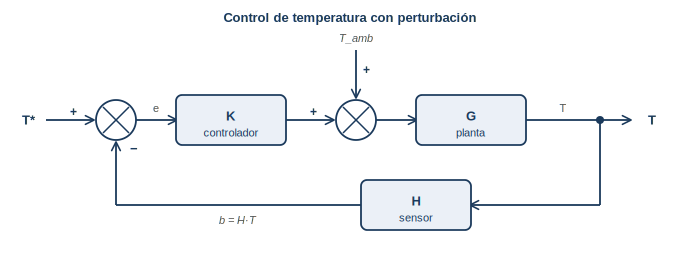
📝 Ver resolución completa
Apartado a — Función de transferencia T/T*
Trayectoria directa: K·G. Realimentación: H. Lazo cerrado negativo:
\[T/T*\ = \ \frac{K \cdot G}{1 + K \cdot G \cdot H}\]
Apartado b — Influencia de K en el error y en el rechazo de perturbaciones
\[e\_ ss\ = \ 1\ - \ T/T*\ = \ \frac{1}{1 + K \cdot G \cdot H}\ \ \ \ \rightarrow \ \ \ \ K \uparrow \ \ \rightarrow \ \ e\_ ss \downarrow\]
Efecto sobre la perturbación Tamb (por superposición, R=0):
\[T\_ pert\ = \ \frac{G \cdot T_{amb}}{1 + K \cdot G \cdot H}\ \ \ \ \rightarrow \ \ \ \ K \uparrow \ \ \rightarrow \ \ T\_ pert \downarrow\]
Mayor K: reduce tanto el error de seguimiento como el efecto de la perturbación. Pero K demasiado alto puede causar inestabilidad.
Nota — Ventajas del lazo cerrado (referencia teórico-práctica)
1. Corrección automática de perturbaciones: el sensor detecta la desviación de la salida y el controlador la corrige. En lazo abierto la perturbación no se detecta ni corrige.
2. Robustez ante variaciones de la planta: si los parámetros del proceso cambian (desgaste, temperatura), el lazo cerrado se adapta. El lazo abierto se desajusta permanentemente.
Nota — Estabilidad: por qué un sistema LA estable puede ser LC inestable
Al cerrar el lazo se añade una trayectoria de retorno que introduce desfases adicionales. Si la señal realimentada llega al comparador con 180° de desfase y ganancia suficiente, la realimentación negativa se convierte en positiva: el sistema amplifica el error en lugar de corregirlo → inestabilidad.
Ejemplo: un controlador de ganancia K muy alta reacciona de forma exagerada, sobrecompensa, genera un error en sentido contrario, sobrecompensa de nuevo → oscilaciones crecientes.
⚠ Tamb es una PERTURBACIÓN (señal no controlada que afecta a la salida). Se modela en el sumador entre controlador y planta.
⚠ El lazo cerrado atenúa la perturbación en el factor (1+K·G·H). El lazo abierto la acepta íntegramente.
⚠ Estos apartados teóricos valen hasta 2,5 pts en el examen PAU. Justificar siempre con argumento físico.
IES Jiménez de Quesada · Manuel Alonso Herrera · Tecnología e Ingeniería II · PEvAU Andalucía 2025-26
Considerar la acción de control que lleva a cabo un conductor para mantener la velocidad de un vehículo a 80 km/h en una carretera con tramos llanos, subidas y bajadas. La velocidad es controlada mediante el pedal del acelerador y medida con un velocímetro digital. Se pide:
a) Identificar las señales y los bloques del diagrama de bloques mostrado con el sistema formado por el conductor, el vehículo y las características de la carretera.
b) ¿En el sistema propuesto, qué representaría la perturbación?
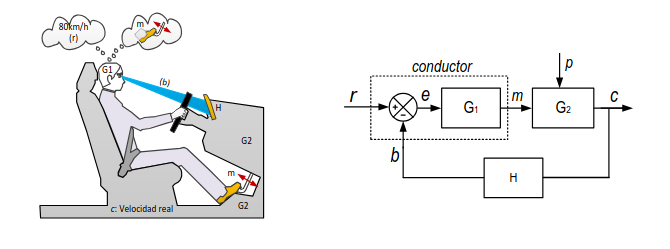
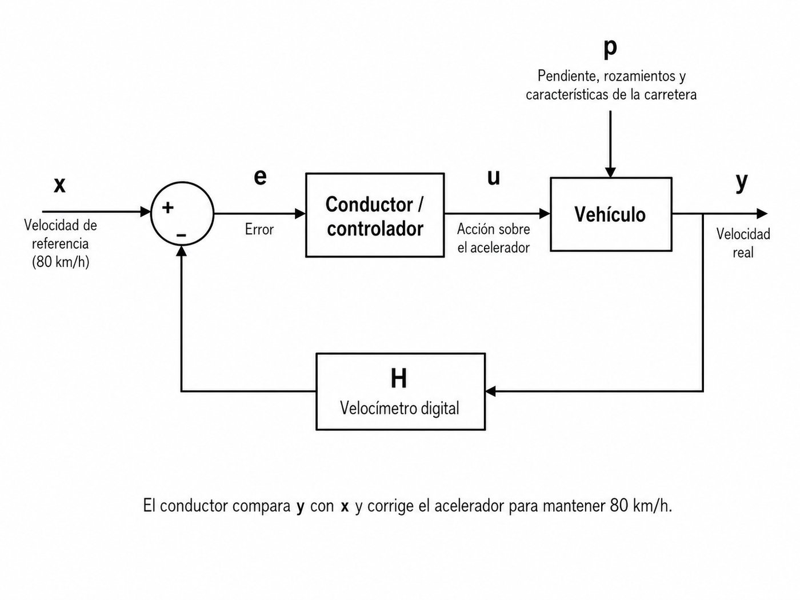

📝 Ver resolución completa
Apartado a — Identificación de señales y bloques
El diagrama normalizado del sistema de control en lazo cerrado tiene la forma:
Asociamos cada elemento del sistema real con el diagrama:
| Símbolo | Significado general | En este sistema |
|---|---|---|
| r | Señal de referencia (consigna) | 80 km/h — la velocidad deseada por el conductor |
| c | Salida (variable controlada) | Velocidad real del vehículo (km/h) |
| e | Error = r − b | Diferencia entre la velocidad deseada y la medida por el velocímetro |
| G₁ | Controlador / regulador | El conductor (cerebro humano): percibe el error y decide cuánto pisar el acelerador |
| m | Variable manipulada | Posición del pedal del acelerador (grados o recorrido del pedal) |
| G₂ | Planta / sistema controlado | El vehículo: convierte la posición del acelerador en velocidad real |
| H | Sensor de realimentación | El velocímetro digital: mide la velocidad real y la muestra al conductor |
| b | Señal de realimentación | Lectura del velocímetro (km/h mostrados en el cuadro de mandos) |
| p | Perturbación | Ver apartado b |
Apartado b — La perturbación
La perturbación p representa cualquier señal externa no controlada que modifica la velocidad real del vehículo sin que el conductor lo haya provocado intencionadamente:
→ Las subidas y bajadas de la carretera (pendiente). En una subida, la velocidad tiende a disminuir aunque el conductor no mueva el pedal. En una bajada, tiende a aumentar.
También podrían considerarse perturbaciones el viento lateral, el estado de la calzada (lluvia, gravilla) o cambios en la carga del vehículo.
En el diagrama, la perturbación entra entre el controlador (G₁) y la planta (G₂), porque actúa directamente sobre el vehículo modificando su velocidad.
Con un grifo de cocina monomando se puede tener agua fría colocando la maneta en un extremo, muy caliente situándola en el otro extremo o una mezcla de ambas en el centro. El agua caliente procede de un termo eléctrico cuya temperatura a su salida no es constante. Considere la acción de control que lleva a cabo una persona para mantener manualmente la temperatura del agua en un valor constante como un sistema de control en lazo cerrado. Se pide:
a) Representar el sistema mediante un diagrama de bloques normalizado.
b) Relacionar las variables y los bloques del diagrama con el sistema descrito.

📝 Ver resolución completa
Apartado a — Diagrama de bloques normalizado
El sistema sigue el diagrama normalizado de la Ponencia (Fig. 4.1), pero aquí se omite la imagen porque aparecía recortada en la versión anterior.
El flujo de señales es: la persona (G₁) compara la temperatura deseada (r) con la que percibe al tocar el agua (b), detecta el error (e) y actúa moviendo la maneta del grifo (m). El grifo y la mezcla de agua (G₂) producen agua a una temperatura real (c). La mano de la persona (H) mide la temperatura real y cierra el lazo.
Apartado b — Identificación de variables y bloques
| Símbolo | En este sistema |
|---|---|
| r | Temperatura deseada del agua (la que la persona quiere) |
| c | Temperatura real del agua que sale del grifo |
| e | Diferencia entre la temperatura deseada y la percibida: "está fría / caliente" |
| G₁ (Controlador) | La persona / cerebro humano: decide cuánto y en qué sentido mover la maneta |
| m | Posición de la maneta del grifo (grados de giro) |
| G₂ (Planta) | El grifo monomando + sistema de mezcla de agua fría/caliente |
| H (Sensor) | La mano de la persona: mide (siente) la temperatura real del agua |
| b | Sensación térmica percibida por la mano (señal de realimentación) |
| p (Perturbación) | Variaciones en la temperatura del agua caliente del termo (no es constante según el enunciado) |
La figura muestra una cámara climática destinada a ensayos térmicos de componentes eléctricos. La temperatura de la cámara, T, es regulada en lazo cerrado mediante una resistencia calefactora cuya potencia, P, es suministrada por un circuito electrónico. Sabiendo que P = A·(T*−T), donde T* es la temperatura de referencia y A la ganancia del controlador y que en régimen permanente T = Tamb + K·P, donde Tamb es la temperatura ambiente y K un parámetro constante de la cámara, se pide:
a) Completar el diagrama de bloques mostrado, indicando sobre él la variable manipulada, el controlador y la planta.
b) Añadir un nuevo bloque al diagrama para representar las características del sensor de temperatura de la cámara.
c) ¿Se podría considerar la Tamb como una perturbación? Justificar la respuesta.
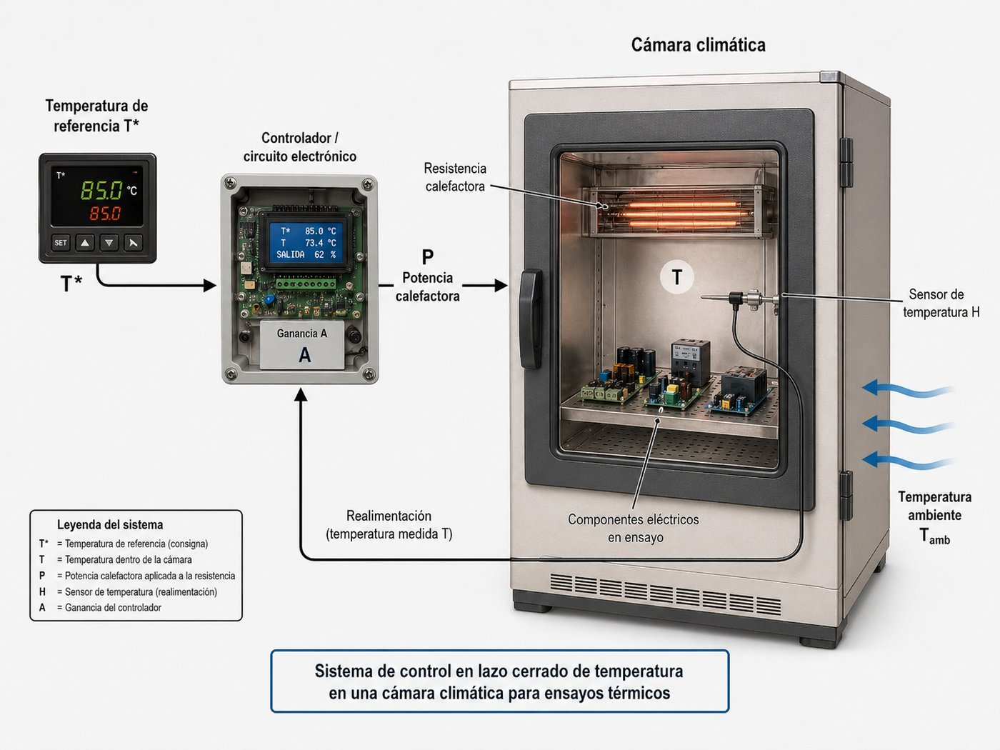
📝 Ver resolución completa
Apartado a — Completar el diagrama de bloques
Del enunciado extraemos dos ecuaciones clave:
1) Controlador: P = A·(T* − T) → el bloque que convierte el error (T* − T) en la potencia P tiene ganancia A. Este es el controlador (G₁ = A).
2) Planta: T = Tamb + K·P → el bloque que convierte la potencia P en temperatura T tiene ganancia K. Este es la planta (G₂ = K).
Identificación sobre el diagrama:
| Elemento | Asignación |
|---|---|
| Bloque izquierdo (entre comparador y planta) | Controlador — ganancia A — entrada: error (T*−T), salida: P |
| Bloque derecho (tras el controlador) | Planta (cámara climática) — ganancia K — entrada: P + Tamb, salida: T |
| Variable manipulada (m) | P = potencia eléctrica suministrada a la resistencia calefactora |
Apartado b — Añadir el sensor de temperatura
En el diagrama original, la realimentación va directamente de T al comparador (realimentación unitaria H = 1). Para modelar un sensor real, se añade un bloque H en la rama de realimentación.
El sensor de temperatura (p. ej. una sonda PT100 o un termopar) mide T y genera una señal b = H·T. Esta señal b se resta de la referencia T* en el comparador.
Si el sensor es ideal, H = 1 y b = T (el diagrama original). Si el sensor tiene una ganancia diferente de 1, la señal de realimentación no coincide exactamente con T.
Diagrama modificado: se inserta un bloque H entre la salida T y el punto de suma, de forma que: e = T* − H·T
Apartado c — ¿Tamb es una perturbación?
Sí, Tamb se puede (y se debe) considerar una perturbación. Justificación:
1) La temperatura ambiente es una señal externa al sistema de control que no depende de las acciones del controlador.
2) Su valor es desconocido y variable (puede cambiar por condiciones externas como hora del día, estación, apertura de puertas, etc.).
3) Modifica la salida del sistema: según la ecuación T = Tamb + K·P, si Tamb cambia, T cambia aunque P no varíe.
En el diagrama de bloques, Tamb entra como una señal que se suma a la salida del controlador (entre G₁ y G₂), exactamente como la perturbación p del diagrama normalizado.
Contexto físico: sistema industrial con doble lazo de realimentación: el lazo interno controla la intensidad aplicada al motor y el lazo externo controla la velocidad. Estructura muy habitual en accionamientos industriales (drives, robótica, máquina-herramienta).
Señales: x velocidad de referencia, y velocidad real, e error de velocidad, m salida del controlador, i intensidad al motor.
Bloques: G₁ controlador de velocidad; G₂ lazo de control de intensidad (con realimentación unitaria interna); G₃ motor; H encoder (medidor de velocidad).
En régimen permanente: G₁ = 50 A/rpm, G₂ = 10, G₃ = 2 rpm/A, H = 1.
Se pide:
a) Relación entre velocidad real y consigna, y/x.
b) Error de velocidad (x − y) en rpm cuando x = 1.000 rpm.
c) ¿Qué valor debe tomar H para que el error de velocidad sea cero?
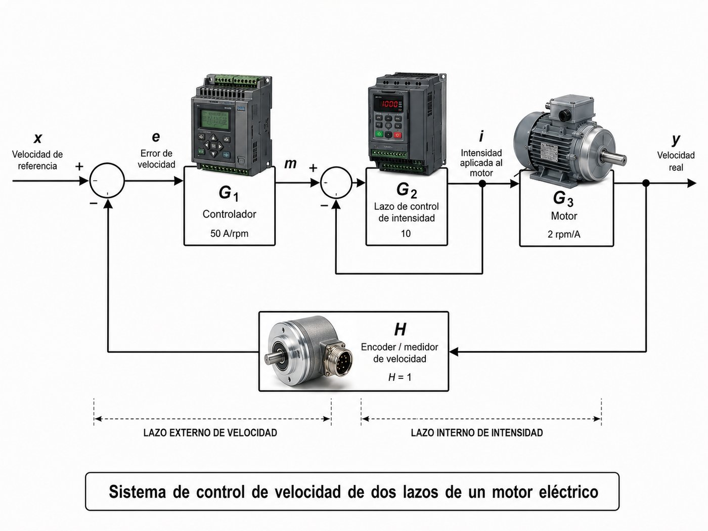
📝 Ver resolución completa
Apartado a — Función de transferencia y/x
Método 1 — Reducción sucesiva de lazos (recomendado).
Paso 1: reducir el lazo interno (G₂ con realimentación unitaria):
$$\frac{i}{m} = \frac{G_2}{1 + G_2}$$
Paso 2: sustituir el lazo interno por su equivalente. La trayectoria directa total (de e a y) es:
$$G_{directa} = G_1 \cdot \frac{G_2}{1 + G_2} \cdot G_3$$
Paso 3: aplicar la fórmula de realimentación negativa con H:
$$\frac{y}{x} = \frac{G_{directa}}{1 + G_{directa} \cdot H}$$
Multiplicando numerador y denominador por (1 + G₂):
$$\boxed{\;\frac{y}{x} = \frac{G_1 \cdot G_2 \cdot G_3}{1 + G_2 + G_1 \cdot G_2 \cdot G_3 \cdot H}\;}$$
Apartado b — Error numérico cuando x = 1.000 rpm
Datos: G₁ = 50, G₂ = 10, G₃ = 2, H = 1, x = 1.000 rpm.
• G₁·G₂·G₃ = 50 × 10 × 2 = 1.000
• 1 + G₂ + G₁·G₂·G₃·H = 1 + 10 + 1.000 × 1 = 1.011
• y = 1.000 × 1.000 / 1.011 = 989,1 rpm
• Error = x − y = 1.000 − 989,1 = 10,9 rpm
Apartado c — Valor de H para error cero
Si el error de velocidad es cero, y = x, es decir, y/x = 1:
$$\frac{G_1 G_2 G_3}{1 + G_2 + G_1 G_2 G_3 \cdot H} = 1 \Rightarrow G_1 G_2 G_3 \cdot H = G_1 G_2 G_3 - 1 - G_2$$
$$H = \frac{G_1 G_2 G_3 - 1 - G_2}{G_1 G_2 G_3} = \frac{1.000 - 1 - 10}{1.000} = \frac{989}{1.000} = 0{,}989$$
→ b) y = 989,1 rpm · Error = 10,9 rpm
→ c) H = 0,989
La figura de la izquierda muestra de forma simplificada un sistema para mantener constante la presión del agua en una vivienda. La presión deseada, p*, fijada mediante un potenciómetro y convertida a la tensión v₁ es comparada con la tensión v₂; la cual procede del sensor de presión colocado a la salida de la bomba. La diferencia de tensiones v₁ − v₂ es amplificada en G₂ y aplicada al motor de la bomba. G₃ representa la relación entre la presión de salida y la tensión v₄, cuyo valor en régimen permanente depende del consumo de agua. En la figura de la derecha se muestra el diagrama de bloques. Obtener la relación p/p*.
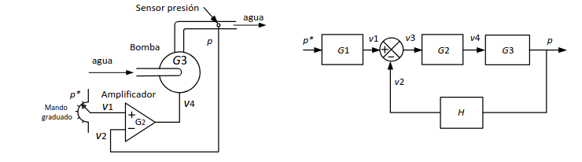
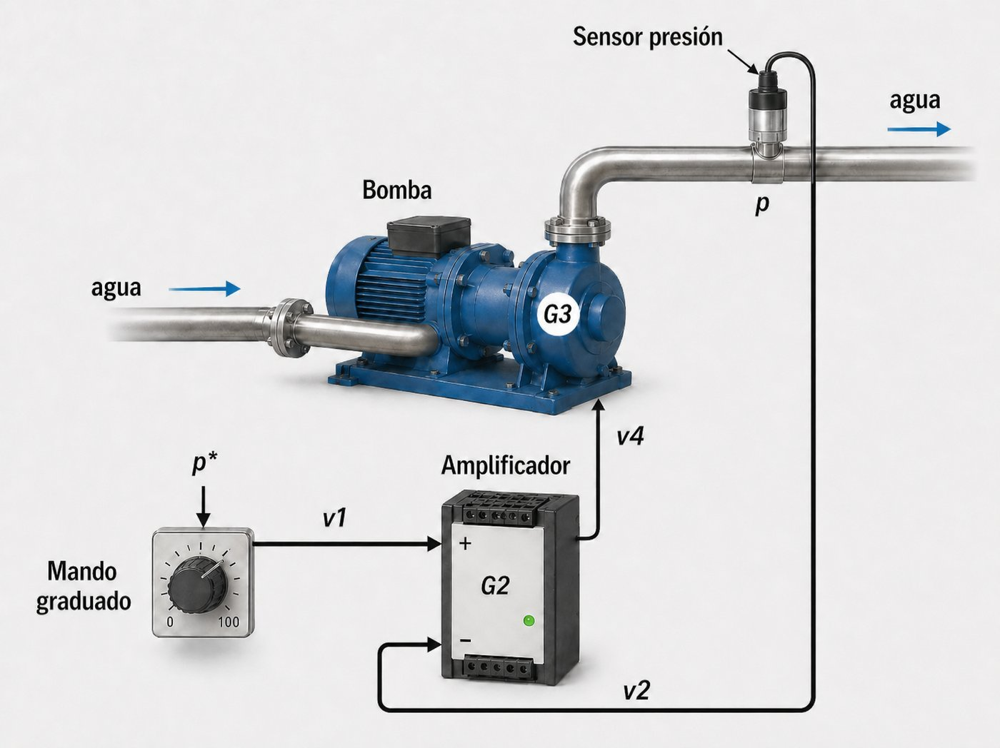
📝 Ver resolución completa
Resolución — Función de transferencia p/p*
Paso 1 — Identificar la estructura del diagrama:
Del diagrama se observan los siguientes elementos en orden:
• G₁ (mando graduado): convierte la presión de consigna p* en tensión v₁. Está fuera del lazo, antes del comparador.
• Comparador: calcula v₃ = v₁ − v₂
• G₂ (amplificador): amplifica v₃ para producir v₄. Está dentro del lazo, en la trayectoria directa.
• G₃ (bomba): convierte v₄ en presión p. Está dentro del lazo, en la trayectoria directa.
• H (sensor de presión): mide p y genera v₂. Cierra el lazo de realimentación.
Paso 2 — Trayectoria directa del lazo:
Dentro del lazo, G₂ y G₃ están en serie → Glazo = G₂ · G₃
Paso 3 — Aplicar fórmula de lazo cerrado (realimentación negativa):
$$FT_{lazo} = \frac{G_2 \cdot G_3}{1 + G_2 \cdot G_3 \cdot H}$$
Paso 4 — G₁ está fuera del lazo (en cascada con la entrada):
G₁ solo multiplica al numerador (NO entra en el denominador):
$$\frac{p}{p*} = G_1 \cdot \frac{G_2 \cdot G_3}{1 + G_2 \cdot G_3 \cdot H} = \frac{G_1 \cdot G_2 \cdot G_3}{1 + G_2 \cdot G_3 \cdot H}$$
Contexto físico: termo eléctrico con depósito de agua, resistencia calefactora, sonda de temperatura H y termostato con potenciómetro. La figura (a) muestra el esquema físico y la (b) el diagrama de bloques.
Bloques: G₃ transductor de consigna (potenciómetro: T* en °C → tensión v₁); G₁ termostato/controlador (v₃ → potencia m a la resistencia); G₂ depósito/planta (potencia m → temperatura T); H sonda (T → tensión v₂); perturbación p: entrada de agua fría.
Datos: H = 0,1 V/°C; en régimen permanente G₁ = 10 W/V, G₂ = 23 °C/W y G₃ = H = 0,1 V/°C.
Se pide:
a) Obtener la relación T/T* sin considerar la perturbación.
b) Calcular el error de temperatura (T* − T) cuando T* = 60 °C.
c) ¿Qué función cumple el bloque G₃ en el diagrama?
d) ¿Qué representaría la perturbación en este sistema?
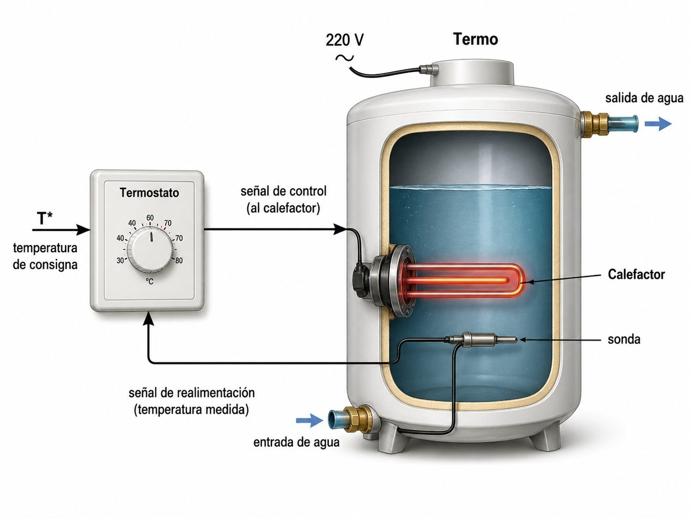
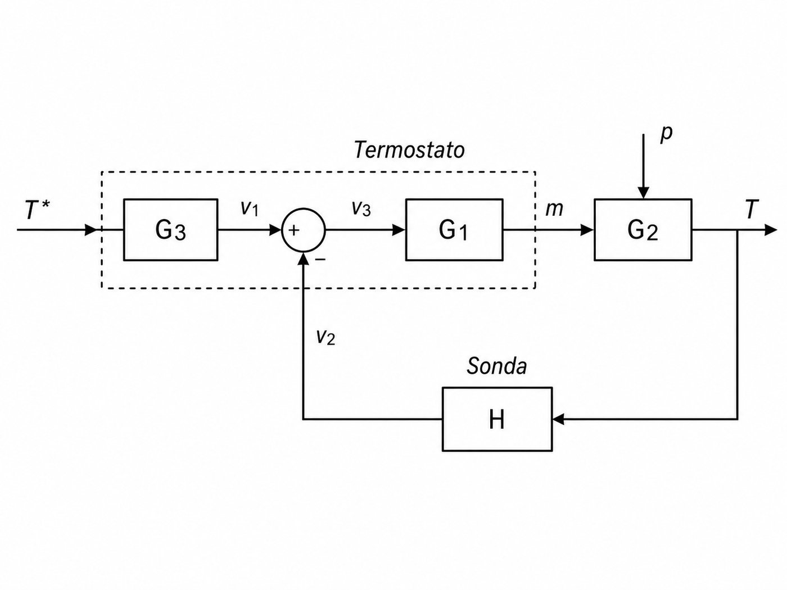
📝 Ver resolución completa
Apartado a — Función de transferencia T/T*
Estructura del diagrama: G₃ está fuera del lazo (transductor de consigna, antes del comparador). Dentro del lazo: G₁ y G₂ en serie en la trayectoria directa, H en la realimentación.
El orden en el diagrama es: T* → G₃ → v₁ → comparador → v₃ → G₁ → m → G₂ → T, con realimentación H desde T hasta el comparador.
Desarrollo algebraico:
$$v_1 = T^* \cdot G_3$$
$$v_3 = v_1 - v_2 = T^* \cdot G_3 - T \cdot H$$
$$m = v_3 \cdot G_1 = G_1 \cdot (T^* \cdot G_3 - T \cdot H)$$
$$T = m \cdot G_2 = G_1 G_2 \cdot (T^* \cdot G_3 - T \cdot H)$$
Reagrupando T en el lado izquierdo:
$$T \cdot (1 + G_1 G_2 H) = G_1 G_2 G_3 \cdot T^*$$
$$\boxed{\;\frac{T}{T^*} = \frac{G_1 \cdot G_2 \cdot G_3}{1 + G_1 \cdot G_2 \cdot H}\;}$$
Estructura análoga al P4 y al P6, con G₃ fuera del lazo.
Apartado b — Cálculo numérico con T* = 60 °C
Datos: G₁ = 10 W/V, G₂ = 23 °C/W, G₃ = H = 0,1 V/°C.
• G₁·G₂·G₃ = 10 × 23 × 0,1 = 23
• G₁·G₂·H = 10 × 23 × 0,1 = 23 (coincide con G₁·G₂·G₃ porque G₃ = H)
• T = T* × 23 / (1 + 23) = 60 × 23/24 ≈ 57,5 °C
• Error = T* − T = 60 − 57,5 = 2,5 °C
Apartado c — Función del bloque G₃
El bloque G₃ es un transductor de consigna: convierte la temperatura marcada en el mando giratorio del termostato (T* en °C) a una señal de tensión (v₁ en voltios) mediante un potenciómetro.
Es necesario porque la señal de realimentación que genera H también es una tensión (v₂), y las señales que llegan al punto de suma deben ser de la misma naturaleza para poder restarse. Sin G₃, se compararían °C con voltios, lo cual no tiene sentido físico.
G₃ cumple la misma función que G₁ en el P4 (transductor de consigna).
Apartado d — Significado físico de la perturbación
La perturbación p está asociada principalmente a la apertura de un grifo de agua caliente. Al abrir el grifo, entra agua fría al depósito y la temperatura del agua disminuye sin que el termostato haya cambiado su consigna.
Características de esta perturbación:
• Externa al sistema de control (no la genera el controlador).
• De valor desconocido (no se sabe cuánta agua fría entrará ni cuándo).
• Afecta directamente a la salida T.
También podrían considerarse perturbaciones los cambios de temperatura ambiente (que afectan a las pérdidas térmicas del depósito) o variaciones en la tensión de alimentación de la resistencia.
→ b) T = 57,5 °C · Error = 2,5 °C
→ c) G₃ = transductor de consigna (convierte T* [°C] a tensión [V])
→ d) p = apertura de grifo (entrada de agua fría); también ΔT ambiente o variación de tensión
Enumerar y comentar brevemente las principales características de los controladores proporcional, integral y derivativo.
📝 Ver resolución completa
Resolución
1. Controlador Proporcional (P)
Ecuación: m(t) = Kp · e(t)
La salida del controlador es proporcional al error actual. Cuanto mayor es el error, mayor es la acción de control.
Características principales:
• Respuesta inmediata: actúa en el instante en que aparece el error.
• A mayor ganancia Kp, menor error en régimen permanente, pero NUNCA lo anula completamente (siempre queda un error residual llamado offset o error de posición).
• Si Kp es demasiado alta, el sistema puede volverse inestable (oscilaciones).
• Es el controlador más sencillo y el más usado como base.
2. Controlador Integral (I)
Ecuación: m(t) = Ki · ∫e(t) dt
La salida del controlador es proporcional a la integral (acumulación) del error a lo largo del tiempo.
Características principales:
• Elimina el error en régimen permanente (offset = 0). Esta es su principal ventaja. Mientras exista error, por pequeño que sea, la integral sigue creciendo y la acción de control aumenta hasta que el error se anule.
• Respuesta más lenta que la proporcional: necesita tiempo para acumular el error.
• Puede causar sobreoscilaciones si Ki es demasiado alta (el controlador "se pasa" porque la integral acumula demasiado).
3. Controlador Derivativo (D)
Ecuación: m(t) = Kd · de(t)/dt
La salida del controlador es proporcional a la derivada (velocidad de cambio) del error.
Características principales:
• Actúa de forma anticipativa: detecta la tendencia del error (si está creciendo o disminuyendo) y reacciona antes de que el error sea grande.
• Mejora la estabilidad y reduce las sobreoscilaciones.
• Nunca se usa solo (si el error es constante, la derivada es cero y no genera acción de control). Siempre se combina con P (control PD) o con PI (control PID).
• Sensible al ruido: las variaciones rápidas de la señal (ruido) generan derivadas grandes.
→ P: rápido, reduce el error pero no lo anula (offset).
→ I: lento, elimina el error en régimen permanente (offset = 0).
→ D: anticipativo, mejora estabilidad, nunca se usa solo.
Una ducha convencional tiene un grifo monomando con el que se puede tener agua fría, caliente o una mezcla de ambas según la posición de la maneta. Considere la siguiente acción de control que lleva a cabo una persona para mantener manualmente la temperatura del agua en un valor constante: primero coloca el mando en una posición intermedia y comprueba que el agua sale fría. A continuación, mueve el mando para aumentar la temperatura y vuelve a comprobar que el agua sigue saliendo fría, repitiendo este proceso hasta alcanzar la temperatura ideal. Se pide:
a) Justificar qué tipo de control está realizando la persona: ¿P, PD o PI?
b) Una vez conseguida la temperatura óptima, la persona nota que sin modificar el mando el agua se va enfriando. Entonces mueve la maneta rápidamente en previsión de una disminución más acentuada de la temperatura. ¿Qué acción de control está realizando la persona ahora? Justificar la respuesta.
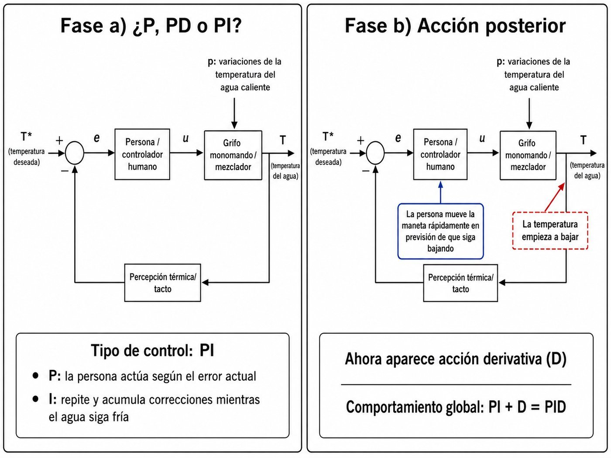
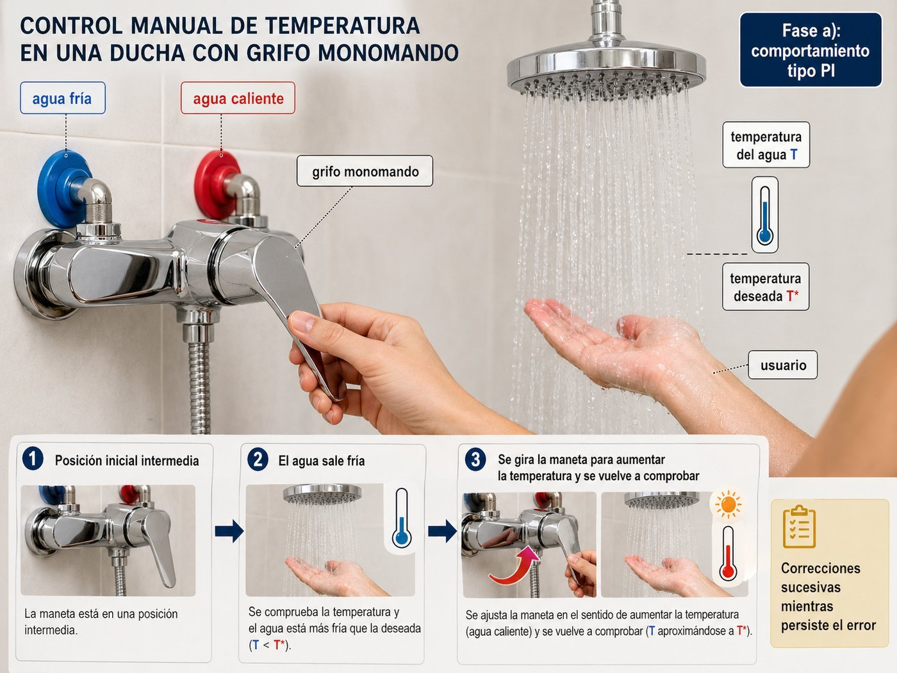
📝 Ver resolución completa
Apartado a — Tipo de control: P, PD o PI
La persona está realizando un control integral (I), por lo tanto el conjunto es un control PI (proporcional + integral).
Justificación paso a paso:
1) La persona coloca la maneta en una posición y comprueba que el agua está fría → detecta que hay error (la temperatura real es menor que la deseada).
2) Sin cambiar la posición (no hay nueva acción proporcional), mueve más la maneta en la misma dirección → está acumulando acción de control porque el error persiste.
3) Repite el proceso hasta que el error se anula → esto es exactamente lo que hace el controlador integral: mientras exista error, la acción de control sigue aumentando progresivamente.
El control proporcional puro (P) haría una sola corrección proporcional al error y se quedaría ahí (con un offset residual). Aquí la persona sigue corrigiendo mientras detecta que el agua no ha alcanzado la temperatura deseada → comportamiento integral.
Apartado b — Acción ante enfriamiento progresivo
La persona está realizando ahora una acción derivativa (D).
Justificación:
1) La persona nota que la temperatura está bajando (no que ya haya bajado mucho, sino que detecta la tendencia).
2) En previsión de que la temperatura siga bajando más, mueve la maneta rápidamente → actúa de forma anticipativa, basándose en la velocidad de cambio del error (la derivada de(t)/dt).
3) No espera a que el error sea grande para actuar; reacciona ante la tasa de variación del error.
Esto es exactamente el comportamiento del controlador derivativo: genera una acción de control proporcional a la velocidad con la que cambia el error. Una disminución rápida de temperatura (derivada negativa grande) produce una corrección grande.
• P: "Está fría → muevo un poco hacia caliente" (proporcional al error actual).
• I: "Sigue fría → muevo más" (acumulo corrección mientras haya error).
• D: "Se está enfriando rápido → muevo rápido antes de que baje más" (anticipo por la velocidad de cambio).
La figura muestra la entrada (error) y la salida (m) de dos tipos de controladores o reguladores utilizados en sistemas de control de lazo cerrado. Indicar qué tipo de controlador es usado en cada uno de los casos.
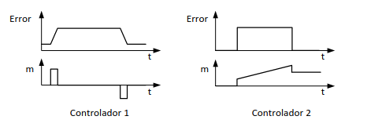
📝 Ver resolución completa
Resolución — Controlador 1
En el Controlador 1 observamos:
• La entrada (error) tiene forma trapezoidal: sube hasta un valor constante, se mantiene durante un tiempo y vuelve a bajar.
• La salida (m) presenta dos impulsos breves: uno positivo en el flanco de subida del error y otro negativo en el flanco de bajada. Mientras el error es constante, la salida es cero.
Esto corresponde al controlador derivativo (D):
$$m(t) = K_d \cdot \frac{de(t)}{dt}$$
La salida solo es ≠ 0 cuando el error cambia. En los flancos de subida y bajada, la derivada es muy grande y produce un pico (positivo o negativo según el sentido). En la meseta, el error es constante y la derivada es cero.
Resolución — Controlador 2
En el Controlador 2 observamos:
• La entrada (error) es un escalón: pasa bruscamente de 0 a un valor constante.
• La salida (m) es una rampa: crece linealmente con el tiempo mientras el error se mantiene constante.
Esto corresponde al controlador integral (I):
$$m(t) = K_i \cdot \int e(t)\,dt$$
Si e(t) = constante (escalón), entonces m(t) = Ki · e₀ · t → una recta que crece con pendiente constante. Mientras el error no sea cero, la salida sigue aumentando (acumulando el error).
• P: escalón → escalón (misma forma, diferente amplitud).
• I: escalón → rampa (integra = acumula en el tiempo).
• D: rampa → escalón, o trapezoide → impulsos en los flancos (deriva = extrae la pendiente; solo actúa cuando el error cambia).
La figura muestra un vehículo circulando con el control automático de la velocidad de crucero activado y fijado a 100 km/h. Las gráficas 1 y 2 muestran las velocidades, primero en llano y después en pendiente para dos controladores o reguladores diferentes: En llano, la velocidad es prácticamente 100 km/h en ambos casos. Con el regulador 1 la velocidad decrece al tomar la pendiente y posteriormente retoma la velocidad de 100 km/h y con el regulador 2 la velocidad se mantiene durante toda la pendiente en un valor inferior a 100 km/h.
¿Qué tipo de regulador usa el control de crucero en el caso 1 y en el caso 2: P, PI o PD? Justificar la respuesta.
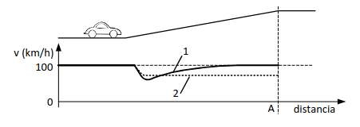
📝 Ver resolución completa
Resolución
Caso 2 — Regulador P (proporcional)
La gráfica 2 muestra que al entrar en la pendiente (punto A), la velocidad baja y se estabiliza en un valor inferior a 100 km/h, donde permanece durante toda la pendiente.
Este comportamiento es característico del controlador proporcional (P):
• La pendiente actúa como perturbación que tiende a reducir la velocidad.
• El controlador P genera una acción proporcional al error (100 − vreal), que compensa parcialmente la perturbación.
• Se alcanza un equilibrio donde la acción de control iguala parcialmente la perturbación, pero queda un error permanente (offset).
• El controlador P nunca puede anular completamente el error en régimen permanente ante una perturbación constante.
Caso 1 — Regulador PI (proporcional + integral)
La gráfica 1 muestra que al entrar en la pendiente la velocidad baja inicialmente, pero posteriormente recupera los 100 km/h.
Este comportamiento es característico del controlador PI (proporcional + integral):
• Inicialmente la velocidad baja (la perturbación es repentina y el controlador necesita tiempo para reaccionar).
• La acción integral va acumulando el error: mientras vreal < 100 km/h, la acción integral sigue creciendo.
• Finalmente, la acción integral compensa completamente la perturbación y el error se anula (v = 100 km/h).
• La clave es que la acción integral elimina el error en régimen permanente.
→ Caso 2: Regulador P (proporcional). Se estabiliza por debajo de 100 km/h porque el controlador P no puede anular el error ante una perturbación constante (offset).
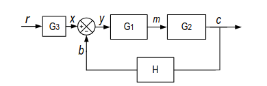
a) ¿En qué bloque o bloques del diagrama adjunto se incluirían los siguientes elementos: motor eléctrico, cilindro neumático, controlador proporcional, fotocélula, potenciómetro, sonda PTC, tacómetro, regulador PID, termo eléctrico y teclado para introducir valores numéricos?
b) Indicar dos ventajas y dos inconvenientes de los sistemas de control de lazo cerrado frente a los de lazo abierto.
📝 Ver resolución completa
Apartado a — Clasificación de elementos en bloques
El diagrama tiene los siguientes bloques: G₃ (transductor de consigna, antes del comparador), G₁ (controlador), G₂ (planta) y H (sensor de realimentación).
| Elemento | Bloque | Justificación |
|---|---|---|
| Motor eléctrico | G₂ (Planta) | Es un actuador que forma parte del sistema controlado. Convierte energía eléctrica en movimiento. |
| Cilindro neumático | G₂ (Planta) | Es un actuador que forma parte del sistema controlado. Convierte presión de aire en movimiento lineal. |
| Controlador proporcional | G₁ (Controlador) | Es un tipo de regulador que genera una acción proporcional al error. |
| Fotocélula | H (Sensor) | Es un sensor que detecta la presencia/ausencia de luz o de objetos. Mide la salida y cierra el lazo. |
| Potenciómetro | G₃ (Transductor de consigna) | Se usa para fijar el valor de referencia (consigna) convirtiendo una posición angular en una señal eléctrica. |
| Sonda PTC | H (Sensor) | Es un sensor de temperatura (resistencia que aumenta con la temperatura). Mide la salida. |
| Tacómetro | H (Sensor) | Es un sensor que mide la velocidad de giro (rpm). Realimenta la señal de velocidad. |
| Regulador PID | G₁ (Controlador) | Es el tipo de controlador más completo (proporcional + integral + derivativo). |
| Termo eléctrico | G₂ (Planta) | Es el sistema controlado: convierte energía eléctrica en calor para calentar agua. |
| Teclado numérico | G₃ (Transductor de consigna) | Se usa para introducir el valor de referencia (p. ej. temperatura deseada = 60 °C). |
Apartado b — Ventajas e inconvenientes del lazo cerrado
Dos ventajas del lazo cerrado (LC) frente al lazo abierto (LA):
1) Corrección automática de perturbaciones: el sensor detecta cualquier desviación de la salida respecto a la referencia y el controlador actúa para corregirla. En lazo abierto, si una perturbación altera la salida, el sistema no la detecta ni corrige.
2) Robustez ante variaciones de la planta: si los parámetros del proceso cambian (desgaste, envejecimiento, cambio de condiciones), el lazo cerrado se adapta automáticamente. El lazo abierto se desajusta permanentemente.
Dos inconvenientes del lazo cerrado frente al lazo abierto:
1) Mayor complejidad y coste: requiere sensores, comparadores y controladores adicionales que encarecen el sistema y aumentan la probabilidad de averías.
2) Riesgo de inestabilidad: si el diseño del controlador no es adecuado (ganancia excesiva, desfases mal compensados), el sistema en lazo cerrado puede volverse inestable y oscilar, algo que no ocurre en lazo abierto.
Inconvenientes LC: 1) Mayor complejidad y coste (sensores, controlador). 2) Riesgo de inestabilidad.
¿Un sistema que es estable a lazo abierto puede ser inestable a lazo cerrado? Justificar la respuesta.
📝 Ver resolución completa
Resolución
Sí, un sistema estable en lazo abierto puede volverse inestable al cerrar el lazo.
Explicación física:
En lazo abierto, la señal recorre la trayectoria directa una sola vez: entrada → controlador → planta → salida. Si la planta es estable (ante una entrada acotada produce una salida acotada), el sistema es estable.
Al cerrar el lazo, se añade una trayectoria de retorno (realimentación) que introduce desfases adicionales. La señal de salida vuelve al comparador, se resta de la referencia y recorre de nuevo toda la trayectoria. En cada recorrido, la señal sufre amplificación y desfase.
La inestabilidad aparece cuando se cumplen dos condiciones simultáneamente:
1) La señal realimentada llega al comparador con un desfase de 180° (media onda de retraso).
2) La ganancia del lazo (G·H) es ≥ 1 a esa frecuencia.
Cuando esto ocurre, la realimentación negativa se convierte efectivamente en positiva: en lugar de restar, la señal realimentada se suma al error. El sistema amplifica la perturbación en cada ciclo en lugar de corregirla → la salida crece indefinidamente (oscilaciones crecientes) → inestabilidad.
Ejemplo intuitivo: Un sistema de calefacción donde el sensor tiene un retardo grande. Cuando la temperatura sube demasiado, el sensor tarda en detectarlo. Cuando finalmente lo detecta y apaga la calefacción, la temperatura sigue subiendo por inercia. Luego baja excesivamente antes de que el sensor lo note y encienda de nuevo → oscilaciones cada vez mayores.
Ejemplo matemático: Sea G la ganancia de lazo abierto. En lazo cerrado: C/R = G/(1 + G·H). Si G·H = −1 (desfase 180° y ganancia 1), el denominador se anula → C/R → ∞ → inestabilidad.
El alumbrado de un jardín se controla de forma automática mediante un sistema de lazo abierto compuesto por un interruptor de corte general, un programador horario para establecer las horas de encendido y apagado y un relé para el encendido de las lámparas controlado por el programador. Se pide:
a) Indicar qué elementos deben añadirse y cuáles deben eliminarse para convertirlo en un sistema de lazo cerrado.
b) ¿Qué ventajas tiene el funcionamiento del alumbrado en lazo cerrado sobre el de lazo abierto?

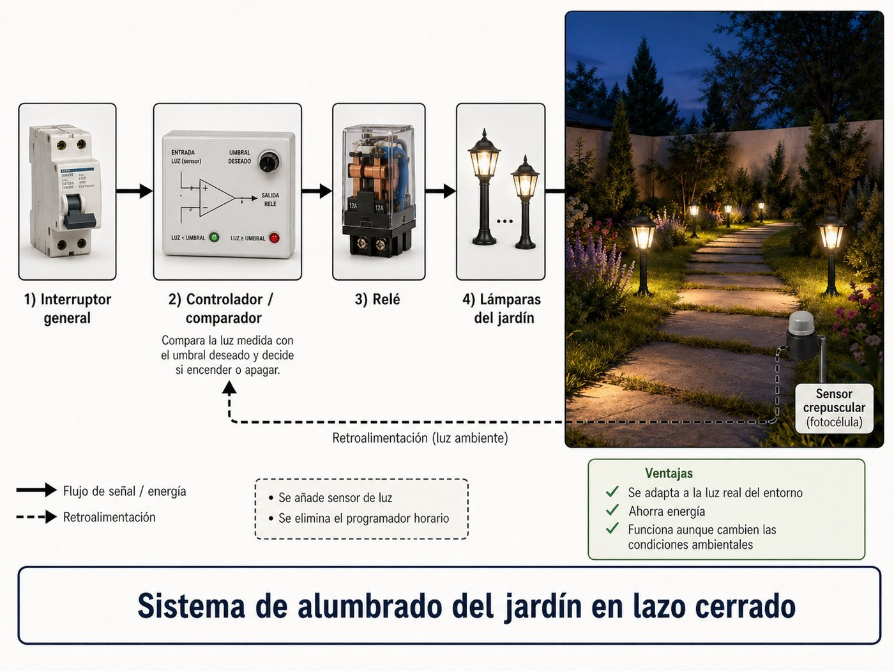
📝 Ver resolución completa
Apartado a — Convertir de lazo abierto a lazo cerrado
Sistema actual (lazo abierto): Interruptor general → Programador horario → Relé → Lámparas. La salida (nivel de luz) no se mide ni se realimenta. El programador decide cuándo encender/apagar según un horario fijo, independientemente de la luz real.
Elementos a ELIMINAR:
• El programador horario, porque la decisión de encender/apagar ya no dependerá de un horario fijo sino de la medición real de la luz ambiente.
Elementos a AÑADIR:
• Un sensor de luminosidad (fotocélula, LDR o luxómetro) que mida el nivel de luz real en el jardín. Este es el elemento de realimentación (H).
• Un comparador que compare el nivel de luz medido con un valor de referencia (nivel de luz deseado).
• Un controlador (puede ser un simple circuito comparador con umbral o un regulador más sofisticado) que, en función del error, active o desactive el relé de las lámparas.
El interruptor de corte general y el relé se mantienen (el relé sigue siendo el actuador que enciende/apaga las lámparas).
Apartado b — Ventajas del lazo cerrado
1) Adaptación a condiciones reales: El sistema en lazo cerrado enciende las luces cuando realmente hay poca luz, no a una hora fija. Así se adapta automáticamente a días nublados (que oscurecen antes), días largos de verano, eclipses, tormentas, etc. El lazo abierto mantiene siempre el mismo horario independientemente de la luz real.
2) Ahorro energético: Las lámparas solo se encienden cuando es realmente necesario (nivel de luz insuficiente) y se apagan cuando hay luz suficiente. Con el programador horario, las lámparas pueden estar encendidas innecesariamente en días luminosos o apagadas cuando aún hay poca luz.
3) Corrección de perturbaciones: Si una farola cercana se enciende o se apaga, o si hay sombras de árboles, el sensor lo detecta y ajusta la iluminación automáticamente.
Durante el aprendizaje de montar en bicicleta se suele perder el equilibrio al mover el manillar en el sentido contrario al necesario para mantener la estabilidad. Se pide:
Explicar la relación que existe entre el manejo de la bicicleta durante el aprendizaje y la condición de estabilidad de un sistema en lazo cerrado.
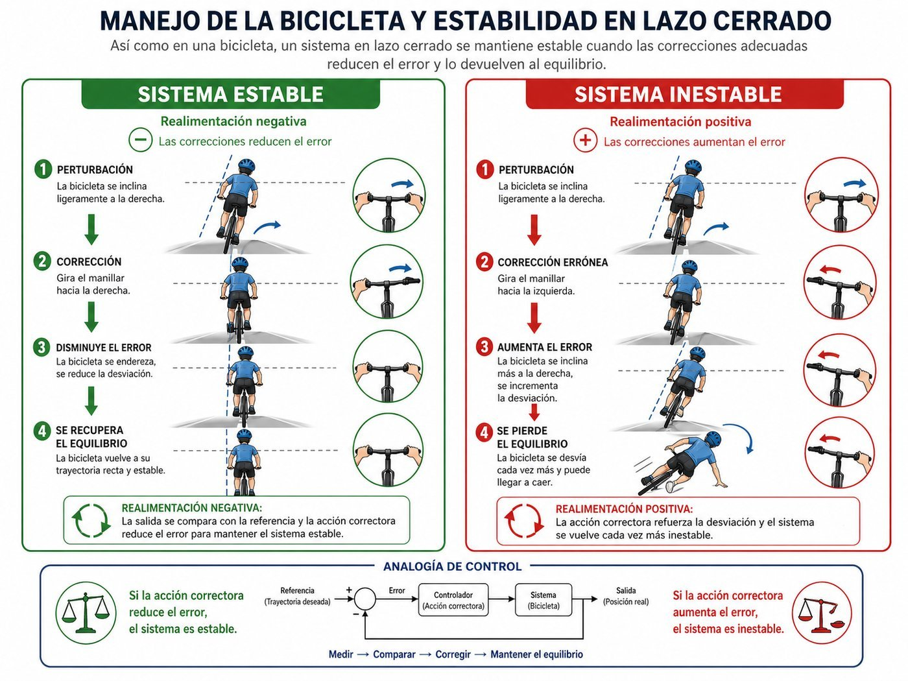
📝 Ver resolución completa
Resolución
Montar en bicicleta es un sistema de control en lazo cerrado donde:
• Referencia (r): posición vertical (equilibrio).
• Salida (c): inclinación real de la bicicleta.
• Sensor (H): el sistema vestibular (oído interno) y la vista del ciclista, que detectan la inclinación.
• Controlador (G₁): el cerebro del ciclista.
• Actuador/Planta (G₂): brazos + manillar + bicicleta.
• Error (e): desviación respecto a la vertical.
Condición de estabilidad en lazo cerrado:
Un sistema en lazo cerrado con realimentación negativa es estable: si la bicicleta se inclina a la derecha, el ciclista gira el manillar hacia la derecha para desplazar el centro de gravedad y compensar la inclinación → la corrección se opone al error → el sistema vuelve al equilibrio.
Lo que ocurre durante el aprendizaje:
Un principiante, al sentir que se cae hacia la derecha, instintivamente gira el manillar hacia la izquierda (el sentido contrario al correcto). Esto equivale a una realimentación positiva: la corrección tiene el mismo signo que el error en lugar del opuesto. En lugar de compensar la inclinación, la amplifica → la bicicleta se inclina aún más → el ciclista corrige más en el sentido incorrecto → el sistema es inestable y el ciclista se cae.
Relación con la teoría de control:
• Realimentación negativa (ciclista experto) → corrección se opone al error → sistema estable.
• Realimentación positiva (principiante) → corrección amplifica el error → sistema inestable.
• La diferencia no está en el sistema físico (la bicicleta es la misma), sino en el signo de la acción del controlador (el cerebro del ciclista). Cuando el principiante aprende a girar el manillar en el sentido correcto, la realimentación pasa a ser negativa y el sistema se estabiliza.